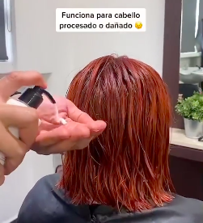

Xiomara, empresa tradicional mexicana con 40 años ofreciendo productos de calidad
para el cuidado del cabello se propone en el 2022 un nuevo desafío: Lanzar una línea profesional para estilistas.
Para ello decide abrir su tienda en línea con tecnología Shopify y se propone construir una comunidad de estilistas en redes sociales.
Valores
Marketing de Contenido
